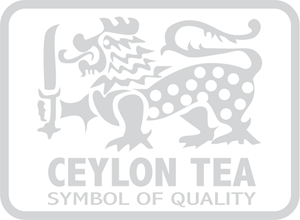

What makes Ceylon Tea unique? Drinking Ceylon tea helps you in;
- The Immune System,
- The Heart,
- The Weight Loss
- And Cancer realted issues
Sri Lanka is one of the most famous countries to produce tea and is one of the most fabulously enjoyed beverages in Sri Lanka. Tea for us is literally second to water, every single person in our Nation enjoys at least three cups a day, and that is just minimally. Every occasion is celebrated with a cup of tea, and we would not substitute it for anything else. Its the poor mans’ drink of choice and the rich mans’ as well. There is something about the wonderful beverage that leaves you wanting for more. The unique tastes and the impeccable aromas of Ceylon Tea is what makes it famous around the globe.
Latest Products
Matcha Green Tea
How Tea helps your heart
Did you know that drinking Unsweetened name Green or Black tea every day can help support a
healthy heart*, all while being a delicious way to hydrate? Enjoy a cup of name picked at the peak of freshness
Here are some ways this helps you;
- 20 percent lower risk of cardiovascular incidents.
- Tea also reduces inflammation and improves the efficiency and function of blood vessels.
- Tea can also significantly lower our risk of heart disease and stroke by reducing LDL (the "bad" cholesterol) that can build up in arteries.
- Drinking tea can help promote gut health
*Click to buy
Our latest enviorenmental project
Climate Reality
Dilmah Conservation’s Climate Reality Project is an initiative intended at building a nation-wide
dialogue on what we should expect and prepare us for climate change.
As businesses, we have a responsibility to understand this phenomenon and the responses and
adaptation we can adopt to help mitigate the cataclysmic consequences of ignoring the reality.
National dialogue on the threats, responses and opportunities a changing climate presents, initiated by Dilmah Conservation,
in collaboration with the United Nations Global Compact Network Sri Lanka (UNGC NSL) and Biodiversity Sri Lanka (BSL).